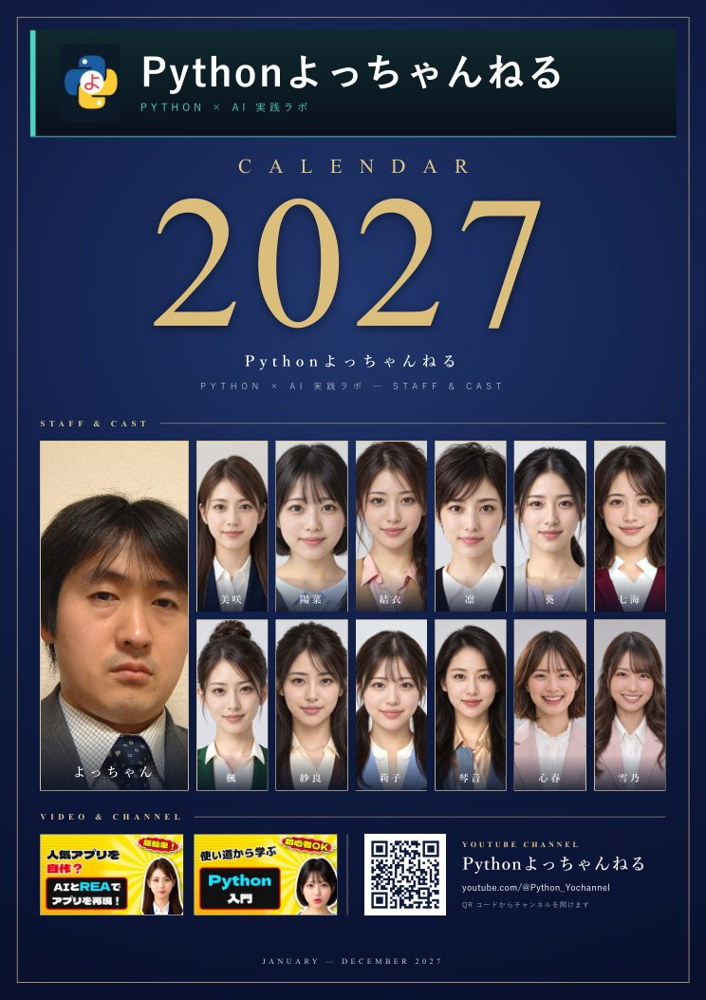

1月
MISAKI
美咲
大学で情報学を学びながら、和菓子店でアルバイト
Python × AI 実践ラボ
Python 入門から pandas・機械学習・生成 AI の実践まで。よっちゃんと 12 人のキャストが、 つまずきやすい所をいっしょに確かめながら、動画でわかりやすく届けます。


Music Video
Pythonよっちゃんねるのスタッフ＆キャスト 12 人が歌う、はじまりの一曲。2026年11月22日（日）20:00 公開
Syntax Sugar
歌：美咲・楓・陽菜・葵・七海・紗良・凛・琴音・結衣・莉子・心春・雪乃
Staff & Cast ― Syntax Sugar

初心者の「わからない」を代わりに聞いてくれる人、実務の使いどころを教えてくれる人。個性の違うキャストが、毎回の動画を支えています。
12 人のグループ名は「Syntax Sugar（シンタックスシュガー）」です。
MISAKI
大学で情報学を学びながら、和菓子店でアルバイト
KAEDE
Web 制作会社のディレクター
 3月
3月HINA
専門学校でデザインを勉強中
AOI
航空会社勤務
NANAMI
古着店スタッフ
SARA
図書館司書
 7月
7月RIN
ソフトウェアエンジニア
 8月
8月KOTONE
フリーの作曲家
YUI
カフェのバリスタ
 10月
10月RIKO
大学の教育学部生
 11月
11月KOHARU
保育士
 12月
12月YUKINO
パティシエ見習い
Latest
numpy入門（2026年11月20日 公開・31 分）

Pickup
配列の作り方から集計・形の変え方・行列積まで、NumPy の基本を 30 分で。
Topics
Python の入門からデータ分析、機械学習、AI の活用まで。テーマごとに、いちばん新しい 1 本を紹介します。
使い道から学ぶ Python 入門。前編・後編を 1 本にまとめたリメイク版。
動画を見る配列の作り方から集計・形の変え方・行列積まで、NumPy の基本を 30 分で。
動画を見るデータの読み込みから集計まで、pandas の始め方を 60 分で。
動画を見るグラフの描き方を、基本から 30 分で解説。
動画を見るデータの分け方から学習・予測・検証まで、機械学習の流れを 30 分で。
動画を見るChatGPT はどう動くのか。Transformer の基礎を 5 分で。
動画を見るAI と REA で、人気アプリの機能を再現した実例を紹介。
動画を見るAI と外部ツールをつなぐ MCP の概要を 3 分で。
動画を見る

Present
キャスト 12 人（Syntax Sugar）が毎月登場する、めくって使う 2027 年カレンダー（PDF・A4／A3 対応）。 チャンネル登録と動画への「いいね」で応援してくださった方に、その場でお渡ししています。
Concept
AI と Python を身近に感じてもらうために、入門からの解説と、実際に動かして見せる実演を届けます。
データの集計やグラフ作成、AI ツールの使い方など、すぐ仕事で使える内容を選んでいます。
コードを実際に動かしながら解説します。動画を止めて、同じ手順を手元で試せます。
コメントでいただいた質問や要望を、次の動画づくりに生かしています。
Learning Path
はじめての人は 1 から順に。必要な所だけ見ても分かるように作っています。
Python 入門で文法と考え方をつかみ、numpy 入門・pandas 入門・matplotlib 入門で、数値の計算・データの集計・グラフへ。
scikit-learn 入門で機械学習の流れを体験し、Deep Learning 入門で深層学習の基礎へ。
ChatGPT の仕組み、MCP、GitHub Copilot、REA。AI を道具として使いこなす回。
All Videos
公開中の動画 19 本を、新しい順に並べています（MV とショート動画を除く）。
DX/業務支援
データ活用・自動化の企画/PoC
講義/研修
Python・AI・Copilot・MCP解説
コラボ
イベント/メディア/共同配信
その他
一般のお問い合わせ